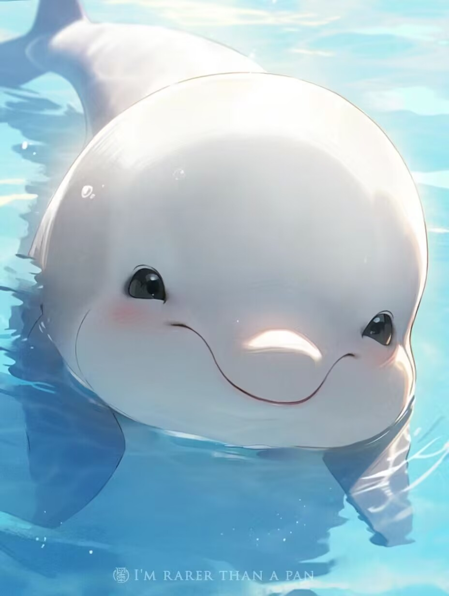
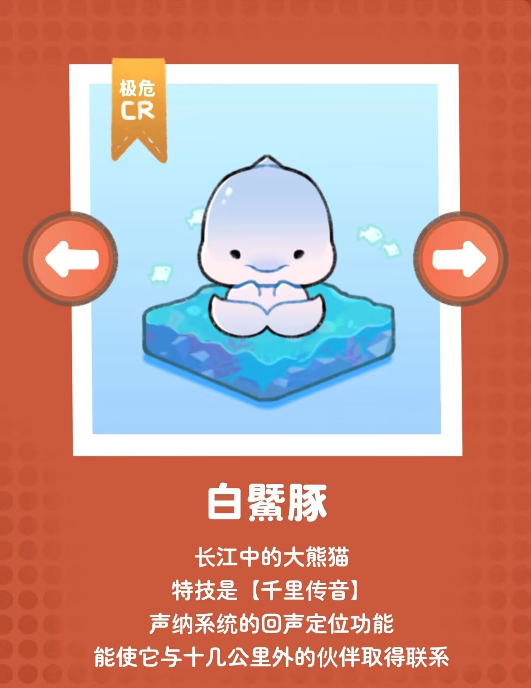
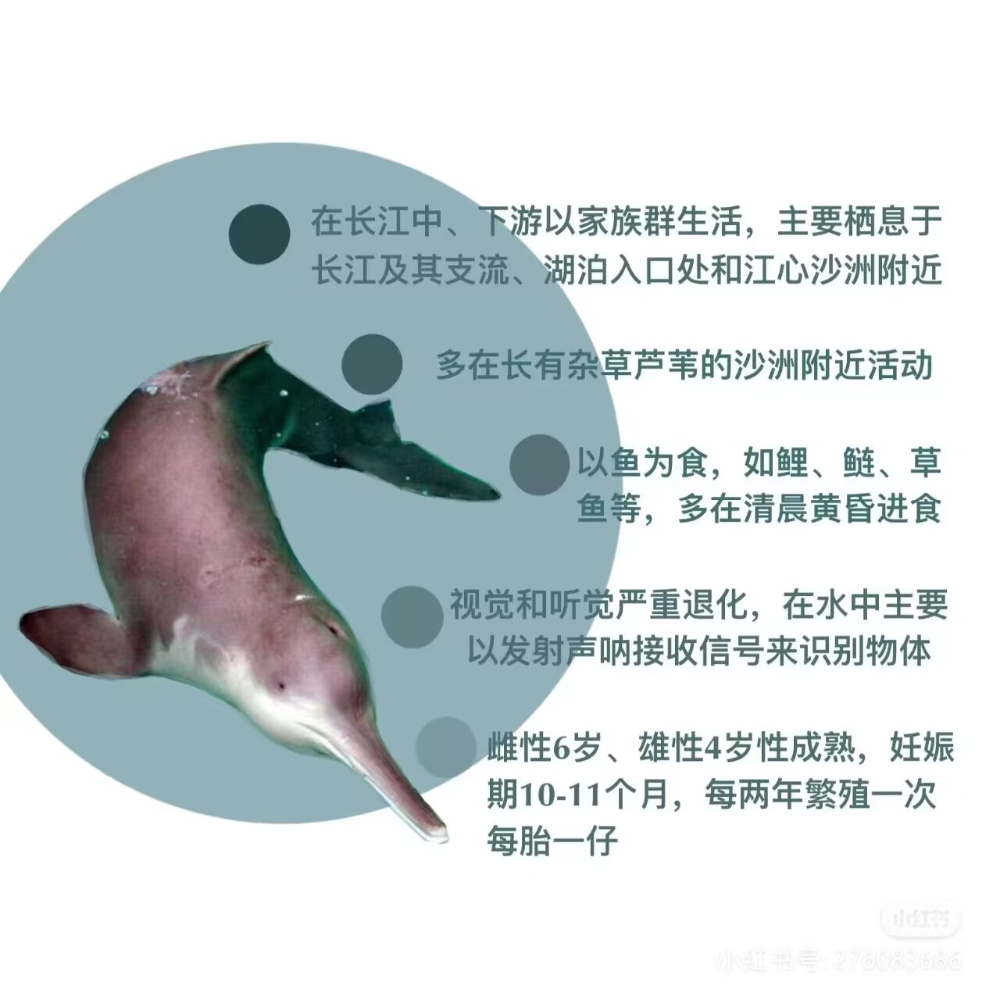

白鱀豚想对你说：
“请珍惜长江，那是我们的家。” |
 |

白鱀豚（学名：Lipotes vexillifer）
哺乳纲、鲸目的一种水生哺乳动物。“鱀”音jì；媒体也常写作“白鳍豚”，是中国特有的一种小型淡水鲸。体呈纺锤形，体长1.5-2.5米，体重可达230千克。吻部似鸟喙般向前伸出，窄而长，吻尖略向上翘，约30厘米。额顶显著隆起，鼻孔长在头顶，呼吸时，头部先出水，喷出的水花不高。眼极小，在口角后上方。耳孔呈针眼状。背鳍三角形，鳍肢较宽，末端钝圆，尾鳍呈新月形。体表背面呈青灰色，腹面为白色，尾鳍并不出水。
主要生活在中国长江中下游及与其连通的洞庭湖、鄱阳湖、钱塘江等水域中，通常成对或10余头在一起，喜在水深流急处活动，善潜水。白鱀豚是食肉动物，口中约有130个尖锐牙齿，为同型齿。以淡水鱼类为食，常在晨昏时游向岸边浅水处进行捕食。也吃少量的水生植物和昆虫。呼吸时，头部先出水，然后全部露出水面，在水面游动2米后，再入水中。寿命可达30多年。
白鱀豚在漫长的进化过程中由陆生动物进化而来，是世界上所有鲸类中数量最为稀少的一种。2018年11月14日，《世界自然保护联盟濒危物种物种红色名录》（IUCN）更新发布，暂未确认白鱀豚灭绝，保持原定评级“极危”。
目前已经功能性灭绝。 |